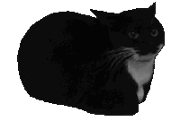

Sobre
Esta página foi fortemente inspirada em bibliotecas de jogos como a da Steam.
Objetivo: aplicar conceitos de HTML, CSS, interatividade visual, e tambem praticar novas tecnicas, como animação.
Esta página foi fortemente inspirada em bibliotecas de jogos como a da Steam.
Objetivo: aplicar conceitos de HTML, CSS, interatividade visual, e tambem praticar novas tecnicas, como animação.